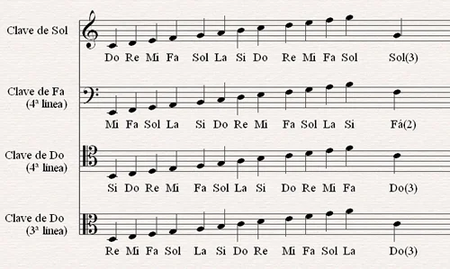

NOTAS MUSICALES
Una partitura es un documento que representa una composición musical a través de un sistema de
notación y signos musicales. En ella se puede encontrar información sobre la duración, la
altura, la intensidad y la velocidad de ejecución de los sonidos.
Las partituras se componen de pentagramas, que son grupos de cinco líneas horizontales y
cuatro espacios entre ellas. Cada línea y espacio del pentagrama corresponde a una nota musical
específica, que se determina por la clave. La posición de la nota en el pentagrama indica su
tono, mientras que su forma indica su duración.
